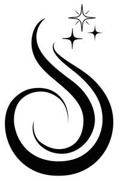

Trade Mark Journal No.2026/009 27 February 2026
UK00004338634 10 February 2026 (3,21,26,35,44)

- Class 3
- Hair masks; Hair styling lotions; Hair lotions; Hair shampoos; Hair cosmetics; Mousses being hair styling aids; Hair pomades; Dyes for the hair; Hair dyes; Hair styling gels; Styling gels for the hair; Hair texturizers; Hair gels; Hair serums; Hair creams; Tints for the hair; Hair styling waxes; Hair colourants; Hair care masks; Hair mousses; Hair colorants; Hair conditioners; Hair dressings for men; Hair tonics; Hair lighteners; Hair moisturizers; Styling sprays for the hair; Hair balms; Hair care lotions; Hair relaxers; Hair protection lotions; Hair permanent treatments; Shampoos for human hair; Mousses [toiletries] for use in styling the hair; Hair protection gels; Wax treatments for the hair; Hair sprays; Adhesives for false eyelashes, hair and nails; Hair styling gel; Colouring lotions for the hair; Cosmetic hair lotions; Hair care serums; Hair care creams; Hair moisturisers; Hair nourishers; Hair bleaches; Hair styling preparations; Hair lacquers; Hair shampoo; Products for protecting coloured hair; Hair tonics [for cosmetic use]; Hair protection creams; Hair conditioners for babies; Hair dye; Hair mascara; Hair gel; Hair wax; Wax strips for removing body hair; Hair rinses [for cosmetic use]; Adhesive tapes for affixing false hair; Gels for fixing hair; Hair colour removers; Colour removers for the hair; Hair lacquer; Hair lotion; Hair permanent wave kit; Hair color removers; Hair piece bonding glue; Cosmetic preparations for the hair and scalp; Hair spray; Cosmetics for the use on the hair; Hair powder; Styling paste for hair; Hair desiccating treatments for cosmetic use; Hair color; Hair conditioner; Hair liquid.
- Class 21
- Hair combs; Combs for back-combing hair; Hair brushes; Hair for brushes; Wide tooth combs for hair; Electric hair combs; Hair tinting brushes; Hair color application brushes; Cattle hair for brushes; Shaving brushes of badger hair; Hair color application bottles; Electric rotating hair brushes; Combs for the hair (Large-toothed -); Large-toothed combs for the hair.
- Class 26
- Hair extensions; Wigs; Hair ornaments, hair rollers, hair fastening articles, and false hair; Hairpieces; Hair twisters [hair accessories]; Hair barrettes; Hairpieces for Japanese hair styling (kamishin); Hairpieces for Japanese hair styling [kamishin]; Bows for the hair; Hair bows; Hair weaves; Hair ribbons; Ribbons for the hair; Hair ornaments in the nature of hair wraps; Hair scrunchies; Tresses of hair; Hair (Tresses of -); Hair tresses; Hair ribbons for Japanese hair styling (tegara); Hair tassel strings for Japanese hair styling (motoyui); Toupees [false hair]; Ornaments (Hair -); Ornaments for the hair; Hair ornaments; Hair ornaments in the form of combs; Hair curlers; Plaits of hair; Hair pieces; Wigs for wear; Hair clips; Hair elastics; Ponytail holders and hair ribbons; Hair buckles; Bridal headpieces in the nature of ornamental hair combs; Tabodome [hair pins for fixing back-hairpieces for use in Japanese hair styling]; Synthetic hair; Hair decorations; Synthetic hairpieces; Claw clips [hair accessories]; Hair tassel ornaments for Japanese hair styling (negake); Fibres for use as replacement hair; Hair curl clips; Sticks for use in styling the hair; Hair rollers; Plaited hair; Hair (Plaited -); Twisters [hair accessories]; Ornamental hair pins for Japanese hair styling (kogai); Hair curlers, other than hand implements; Hair nets; Nets (Hair -); Hair fasteners; Hair pins; Pins for the hair; Hair netting; False hair for Japanese hair styling (kamoji); Ornamental combs for Japanese hair styling (marugushi); Elasticated hair ribbons; Hair wraps; Tape for fixing wigs; Snap clips [hair accessories]; Human hair; Clam clips for hair; Foam hair rollers; Strips of plastics for use in highlighting of hair; Elastic for tying hair; Strips of plastics for use in tinting of hair; Oriental hair pins; Hair curling pins; Hair coloring caps.
- Class 35
- Retail services in relation to hair products.
- Class 44
- Hair braiding services; Hair extension services; Hair straightening services; Hair styling services; Hair styling; Hair salon services for women; Hair perming services; Hair dressing salon services; Hair salon services; Beauty salons for wig cutting; Hair weaving services; Hair curling services; Hair replacement; Hair dyeing services; Hair weaving; Waxing services for the removal of hair from the human body; Hair cutting; Shampooing of the hair; Body waxing services for hair removal in humans.
Stephanie Hajistilly